Точность пространственных данных в MapInfo и методы её повышения
Автор: MapInfo Corporation © 2006
Перевод: ЭСТИ МАП © 2014
Оригинал этой статьи за авторством Шон Ричардса (Sean Richards) был опубликован ещё в 2006 году, но, по вполне понятным причинам, оказался не вполне замечен русскоязычным сообществом пользователей MapInfo. К сожалению. Потому как в статье давались ответы на многие вопросы, связанные с точностью хранения и отображения координат, бурно обсуждаемые много лет на форумах и прочих площадках.
В 2014 году компания ЭСТИ МАП выложила на своём новом сайте адаптированный перевод оригинальной статьи. Опять же, не замеченный пользователем, судя по продолжающим возникать на форумах вопросам. В то время как и сама статья, и её блистательный перевод, несомненно, заслуживают крайне внимательного прочтения и изучения.
Итак, цитата: «В этой статье мы проведем исследование и анализ того, каким образом следует настроить ваши продукты MapInfo, чтобы достичь максимальной пространственной точности, отвечающей бизнес-потребностям вашей организации.»
- Достижение высокой точности
- Исходные данные
- Последовательность процесса
- 32-разрядные против 64-разрядных целых чисел
- Отображение данных в режиме высокой точности
- Экспорт с высокой точностью
- Импорт с высокой точностью
- Резюме
Достижение более высокой точности при хранении координат объектов карты
«Каким образом можно получить более высокий уровень точности в MapInfo Professional?». Обычно за этим вопросом следует: «Почему бы не использовать 64-разрядную точность данных, как в некоторых других системах?». Для того чтобы получить ответы на эти вопросы, сначала необходимо понять как MapInfo осуществляет хранение пространственных данных.
Вы можете предположить, что в файл просто записываются такие числа, как 153.34125 и -26.21435. Этот метод сработает, но он будет очень неэффективным и медленным. Что делает MapInfo Professional – она хранит все данные, записанные в файл в едином формате точности, выраженном в 32-разрядных целых числах. 32-разрядное целое число может содержать целые значения от 0 до более 2 миллиардов. Когда таблица считывается, MapInfo Professional преобразует эти данные, выраженные в целых числах, обратно в их реальные координаты и хранит их в памяти как 64-разрядные числа с плавающей запятой. Может это выглядит, как очень трудоемкий процесс, но на самом деле именно таким образом функционируют системы, которым приходится оперировать большими числами.
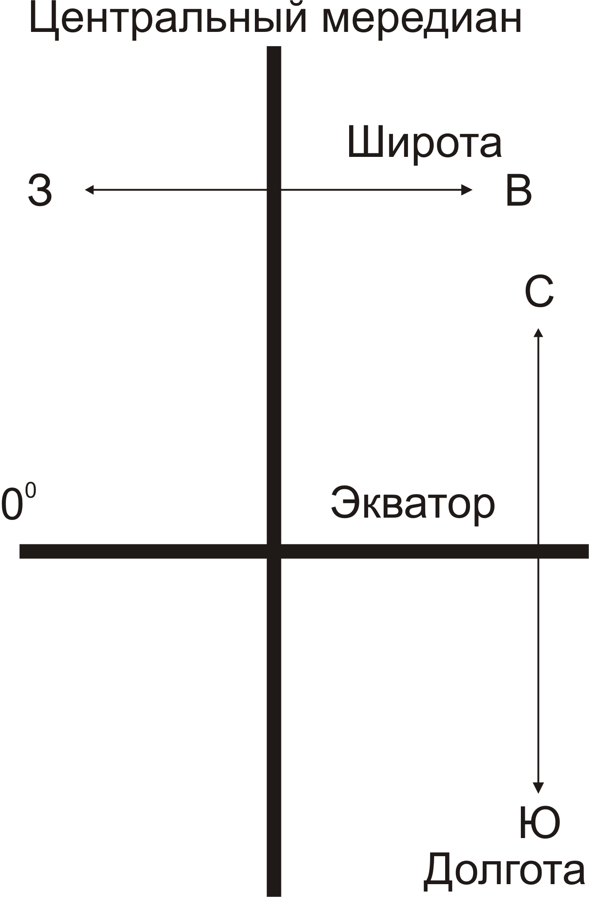Точность зависит от того, в какой системе координат данные будут храниться. Например, если используются координаты Долгота/Широта, числа необходимо хранить в диапазонах от -180 до +180 и от -90 до +90. Это означает, что самое большое число, которое нам требуется – это 360. Однако по математическим соображениям используется диапазон от -1000 до +1000, что делает 2000 самым большим числом. Если далее разделить этот диапазон на возможные 2 миллиарда из 32-разрядного целого, то получим 0.000001 градуса (около 100 миллиметров).
В данной ситуации следует запомнить, что эта система координат используемая по умолчанию. Ниже будет описан метод, имеющийся в арсенале MapInfo Professional, который позволяет повысить уровень точности. Очень небольшому количеству приложений ГИС когда-либо требовалось получать координаты земного шара с субмиллиметровой точностью. Обычно пользователи ГИС работают с гораздо меньшими территориями, такими как области, районы и даже отдельные города. Мы называем это «ограниченными координатами» (bounded coordinates).
Все слои пространственных данных MapInfo являются ограниченными. Как было показано выше, стандартная проекция Мира ограничена диапазоном +/-1000. Это называется «неявным ограничением», поскольку нет никакого указания на диапазон координат. Все проекции имеют неявные ограничения.
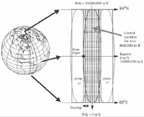 Рассмотрим картографическую сетку Австралии: MGA (UTM проекция, которая обычно используется в Австралии). Это полосы шириной 6 градусов, которые обертывают весь глобус. При выборе проекции из диалога, вы выбираете конкретную зону (шириной 6 градусов) для северного либо южного полушария. Границами в данном случае будут 10,000,000 м на север (Экватор) и 0 м на 80 градусов южной широты. Проекция также имеет ширину 1,000,000 метров с центром на 500,000 м.
{kind=link}
Используя тот же метод, что был описан выше, данная проекция имеет числовой диапазон 10,000,000. Разделив на 2 миллиарда, получаем точность 0.005 метра (полсантиметра).
Исходные данные
Для получения более высокой точности MapInfo Professional также поддерживает «явное ограничение», при котором пользователь может вручную задать границы координат. Примером может служить создание План-схемы, когда требуется задать минимальные и максимальные значения координат. «Явное ограничение» также может использоваться для любых стандартных проекций. Когда вы делаете это, вы задаете меньший диапазон для своих координат. Чем меньше диапазон, тем выше точность. Например:
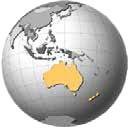- Брисбен, Австралия ограничен UTM координатами 7,000,000 (Север), 6,930,000 (Юг), 470,000 (Запад) и 530,000 (Восток). Максимальный диапазон здесь составляет 70,000 м. разделите это на 2 миллиарда и получите точность 0.000035 метра. Это точность 0.035 миллиметра. Применив ограничение тем же способом для всей территории Австралии, мы получим точность примерно в 2.5 миллиметра.
- Япония ограничена координатами 24° (Север), 46° (Юг), 122° (Запад), 146° (Восток). В этом случае приблизительная точность, доступная пользователям, при условии, что в качестве датума используется JGD2000, составит 1 миллиметр.
Вы всегда можете использовать явное ограничение, если необходимо сохранить пространственные данные в формате более высокой точности. Тем не менее, вы не можете добавить границы к существующему слою и ожидать при этом, что данные станут более точными. После того, как вы добавите границы, на месте останутся те же самые координаты. Только после добавления новых данных или редактировании существующих вы сможете получить и использовать более высокий уровень точности.
Последовательность процесса
Итак, как же создается таблица с явным ограничением? В первую очередь необходимо определить диапазон координат, который отвечает вашим требованиям. Запомните, как только границы установлены для слоя, в этом слое невозможно будет сохранять пространственные данные за пределами этих границ. Например, если вы выполняете работы для местной администрации, вы можете установить границы слоя, на 10 км выходящие за пределы реальных административных границ.
Даже если вы раздвинете границы слоя на 100 км, то все равно получите гораздо более высокий уровень точности координат, чем который, возможно требовался. Если работы выполняются в государственном масштабе, то можно использовать проекцию Широта/Долгота с границами, лишь едва выходящими за пределы реальных.
Далее вы создаете таблицы как обычно, устанавливая желаемую проекцию. Для применения границ в таблице запустите приложение MapBasic из меню Инструменты → Каталог программ → CoordSys Bounds Manager (Границы рамки карты). Это приложение покажет список уже открытых слоев. Границы выбранного слоя отображаются, как показано на рисунке ниже.
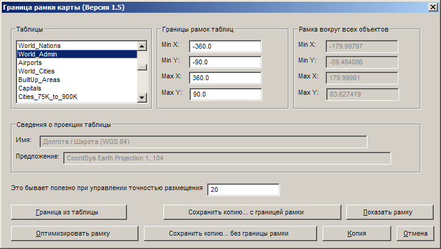Вы можете вручную ввести границы или использовать кнопку Optimise CoordSys Bound (Оптимизировать рамку), чтобы автоматически считать требуемые границы из слоя. Затем, вы сохраняете новую копию таблицы. Хороший подход – создать новую пустую таблицу с явно установленным границами. Впоследствии при создании новых таблиц используйте копию этого пустого файла (используйте команду «Новая таблица»).
Иногда вы можете получать данные из других систем в формате MIF/MID. В зависимости от источника эти данные могут оказаться более высокой точности, чем та которую может обрабатывать стандартная проекция с неявным ограничением. Например, файл в формате MIF/MID, экспортированный из другой системы в проекцию GDA, может иметь три десятичных разряда. Если вы просто импортируете его в MapInfo Professional, то в итоге получите данные для двух десятичных разрядов. Чтобы сохранить полную точность, предлагается открыть MIF файл в любом текстовом редакторе и добавить соответствующие настройки проекции, включая границы (Bounds), в раздел заголовка. В этом случае при импорте данных, вы получите точность 3-х десятичных разрядов, как и в оригинальных данных.
32-разрядные против 64-разрядных целых чисел
Pitney Bowes Software предпочла использовать 32-разрядные целые числа для внешнего хранения вместо 64-разрядных, поскольку это позволяет добиться хорошего соотношения между эффективностью и точностью. Использование 32-разрядных целых чисел для хранения также означает, что пространственные данные MapInfo при хранении занимают в два раза меньше места, чем такой же эквивалент 64-разрядных данных. Это не только более эффективно, но и позволяет загружать данные и выводить их на монитор значительно быстрее.
Отображение данных в режиме высокой точности
Как было продемонстрировано выше, MapInfo Professional имеет возможность хранить данные с более высоким уровнем точности, если требуется. Следующим шагом является просмотр координат. На карте (справа) нанесены два набора точек. Жёлтые точки были помещены в таблицу с установленными границами, в то время как оранжевые точки поместили в неограниченную таблицу. Используя инструмент «Выбор», вы можете двойным щелчком мыши на точках увидеть их координаты. Ниже карты вы видите два снимка экрана, где показаны координаты точки на карте. На первом показаны координаты точки в таблице с установленными границами. На втором экране показаны координаты точки в неограниченной таблице. Обратите внимание на то, что неограниченная таблица показывает только 6 десятичных разрядов, в то время как таблица с установленными границами показывает 7 или 8 десятичных разрядов.
Далее вы, возможно, захотите посмотреть координаты в окне Списка. На этом этапе многие пользователи сталкиваются с трудностями. Это происходит поэтому, что MapInfo Professional всегда отображает поля типа FLOAT округленными до установленного количества десятичных разрядов. Это означает, что пользователь не увидит все десятичные разряды. Для того, чтобы обойти эту проблему, следует использовать тип DECIMAL для полей с координатами. В диалоге «Перестройка структуры таблицы» (Modify Table Structure) вы видите, как поля Широта/Долгота настроены на хранение 12 цифр с 8-ю после десятичной точки.
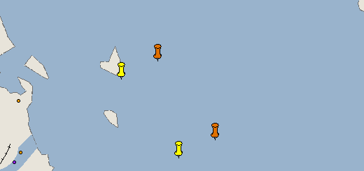После того, как структура таблицы была корректно установлена, необходимо будет обновить эти поля значениями координат объектов. Рекомендуется использовать утилиту «Записать координаты объекта», которая поставляется вместе с MapInfo Professional. Этот инструмент находится в Каталоге программ (меню «Инструменты» программы MapInfo Professional). Утилита позволяет автоматически обновить две колонки таблицы, наполнив их координатами центроида объектов. Во время использования данного инструмента вы имеете возможность определить, какая система координат будет использоваться. Это очень важный, момент поскольку используемая для извлечения система координат является ограниченной.
Ниже показано окно Списка для таблицы с ограничением, после того, как утилита «Записать координаты объектаrlaquo; была запущена. Обратите внимание, что координаты используют восемь десятичных разрядов так же, как в предыдущем примере с использованием инструмента «Выбор».
Альтернативным методом является использование команды «Обновить колонку» (Update table Set column). Вы можете заполнить поля координатами, используя функции CentroidX(obj) и CentroidY(obj) объекта.
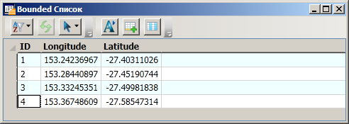 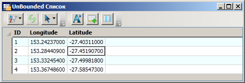Нули в конце значений указывают, что не все доступные десятичные разряды были использованы.
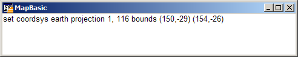Этот подход использует проекцию сессии MapInfo Professional, а не проекцию таблицы. Для извлечения полных координатных данных необходимо настроить проекцию сессии на проекцию таблицы, в которой находятся объекты. Это можно сделать из диалога Настройки > Режимы > Окно Карты – закладка Проекция или напечатав строку определения координатной системы в окне MapBasic (как показано сверху). Окно Списка (второе) показывает результаты применения метода «Обновить колонку» без установки проекции в координатной системе с определенными границами.
Последним методом отображения координат является SQL запрос и отображение координат во временных полях, созданных в операторе SQL. Еще раз напоминаем, что сначала необходимо настроить систему координат сессии на ограниченную проекцию.
Ниже показан диалог SQL Select используемый для получения координат.
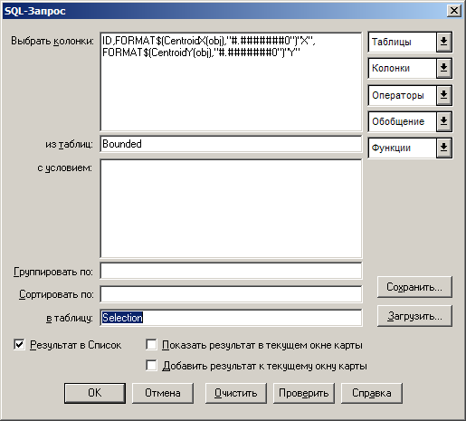Экспорт с высокой точностью
MapInfo Professional поддерживает несколько форматов экспорта данных, позволяющих использовать их в других системах. Два наиболее распространенных формата – это MIF/MID и Autocad DXF. Команда Таблица → Экспорт поддерживает точность координат во время их экспорта в MIF/MID. Это показано ниже вместе с двумя примерами MIF экспорта. В первом приводится Ограниченная таблица с координатными значениями высокой точности. Во втором примере представлена Неограниченная таблица, содержащая только 6 десятичных разрядов точности.
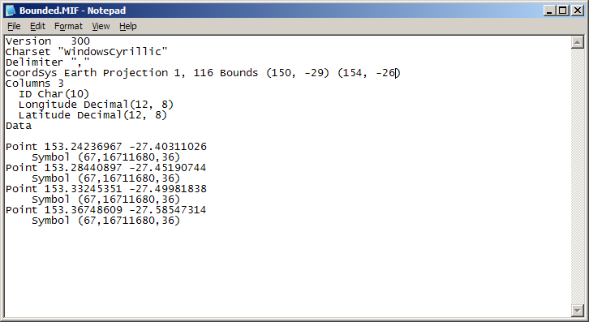 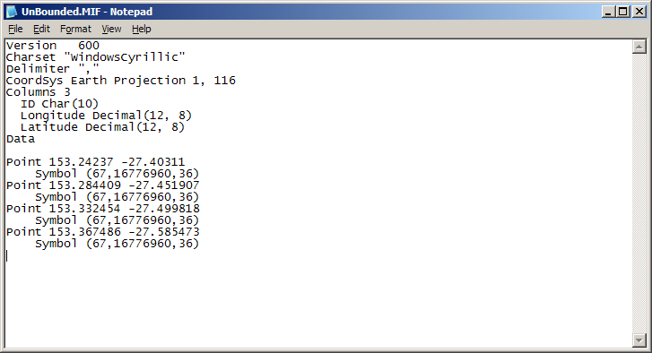При экспорте в DXF из ограниченной таблицы с использованием команды Таблица → Экспорт (даже если координатная система сессии была установлена), будет производиться округление данных до 6 десятичных разрядов. Вместо этого можно использовать инструмент Универсальный транслятор (Universal Translator в MapInfo Professional v11.5 и ниже, FME Quick Translator в MapInfo Professional v12.0). Поскольку данный инструмент фактически работает за пределами MapInfo Professional, он получает данные координатной системы непосредственно из таблицы, а не из координатной системы сессии MapInfo. Здесь представлены диалоги Универсального транслятора. Ниже – пример вывода результатов в Блокнот. Обратите внимание на то, что извлеченные координаты имеют более высокую точность.
Импорт с высокой точностью
Процесс импорта схож с экспортом в том, что MapInfo Professional без проблем поддерживает формат MIF/MID, но все равно придется использовать Универсальный транслятор для DXF. Важным моментом в MIF/MID является тот факт, что файл уже содержит координатную информацию в разделе заголовка.
Как показано в примере, координатная система таблицы определена наверху MIF/MID файла. Если ваш MIF/MID файл был создан не MapInfo Professional, а другой системой и предоставляет более 6-ти десятичных разрядов, тогда следует убедиться в том, что система координат содержит оператор границ (Bounds). При необходимости это можно сделать вручную, используя любой текстовый редактор.
При импорте DXF с помощью Universal Translator пользователю будет необходимо выбрать требуемую проекцию из стандартного диалога выбора проекций. Для этого вам потребуется проекция с границами, уже введенными в файл определения MapInfo Projection (MAPINFOW.PRJ). MAPINFOW.PRJ файл можно найти в каталоге, в котором находится программа MapInfo, отредактировать его можно в любом текстовом редакторе. Ниже приведен пример ограниченной проекции (GDA94), добавленной в MAPINFOW.PRJ файл.
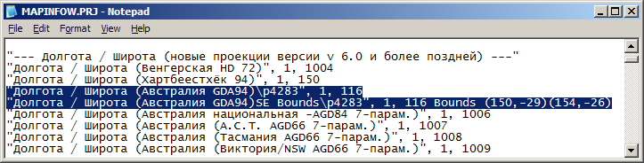Ниже показан диалог Универсального транслятора, с настройками импорта формата DXF в MapInfo TAB. Обратите внимание на кнопку Проекция внизу справа в разделе Источник. Кнопка вызывает диалог «Выбор проекции», в котором сейчас доступна для выбора Ограниченная проекция.
Резюме
MapInfo Professional может работать с данными более высокой точности, если это требуется пользователю. Хранение данных с более высоким уровнем точности допустимо, только если исходные данные поставляются с сопоставимым уровнем точности.
Оригинал:
Точность пространственных данных
Оригинал на английском:
Focusing in on Spatial Precision